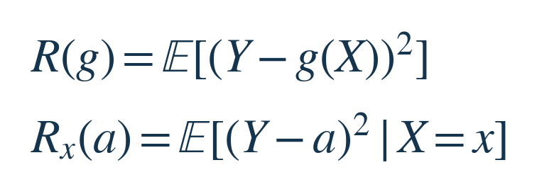
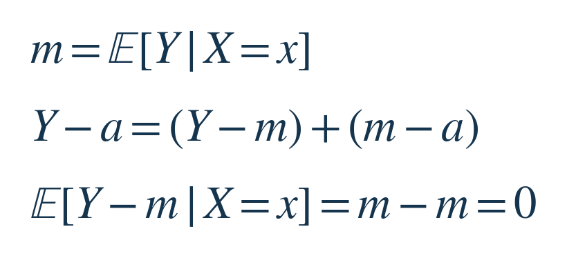
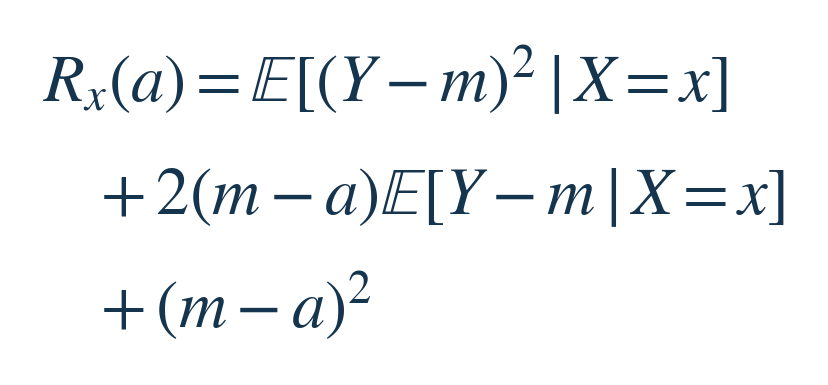
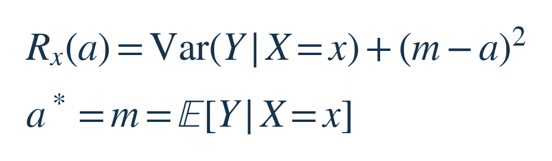
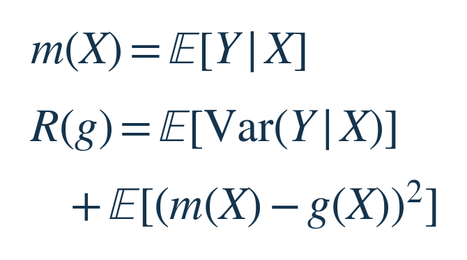
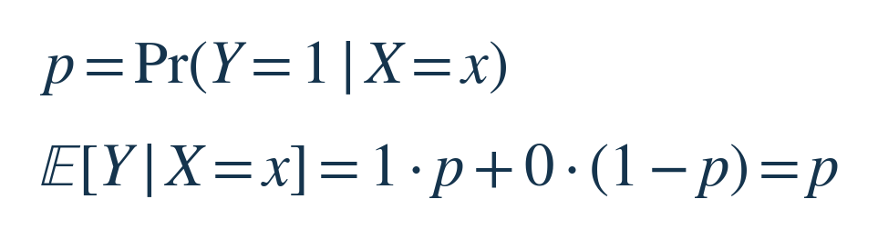

每周探索 · 数学共性小课 · 2026-10-16 · 主线约 6–8 分钟
要预测一次配送总共用多久，先把已知的路况固定，再比较在这种路况下各种预测的平均损失。本课要说明：以平方误差计分时，条件平均值为什么最好，以及剩下的误差从哪里来。
本期增量：上期合并多个测量值来估计同一固定真值；这一期用已知信息预测一个尚未发生的随机结果，选择的是整条预测规则。无需先读往期。
先确定能看什么、能选什么
把预测时已经看到的路况记作 X，最终配送用时记作 Y，单位是分钟。我们能设计一条规则 g：看到 X，就输出 g(X) 分钟；不能偷看最终的 Y。这里先假设配送过程的联合分布固定且已知，研究理想规则，再讨论怎样从数据学它。
怎样评价规则？每次把实际用时减去预测用时，再平方；最后按各种配送情况出现的概率取平均。记号 E 表示这种概率加权平均。平方会更重地惩罚大误差，这是本课明确选择的评价标准，单位是分钟²，并非所有配送业务都应使用它。


第一行评价整条规则。第二行只看路况已经固定为 x 的情况：此时 g(x) 是一个可以选择的数，暂时叫 a；竖线后的 X=x 表示只在这种路况的结果分布内取平均。给每种路况选好一个 a，才构成整条 g。
| 记号 | 本课含义 |
|---|---|
| X / x | 路况信息 / 已知的一种路况 |
| Y / g(X) | 实际用时 / 按路况给出的预测 |
| a / m | 固定路况下的可选预测 / 组内平均值 |
把误差分成两段，交叉项为何消失
固定同一种路况，记 m 为这种路况下 Y 的平均值，称为条件均值。m 暂时只是分布的一个特征，还没有证明它是最佳预测。现在在误差 Y−a 中加上再减去 m：


第一段 Y−m 是这次结果相对组内平均值的偏离；第二段 m−a 是你选的预测相对组内平均值的偏离。固定 x 后，m 和 a 都不再随本组的 Y 变化，因此第二段是常数。第一段有正有负，按各结果的概率平均后为零，正是“平均值”的定义。
把两段之和平方，会出现两个平方项和一个交叉项，再对本组取平均：


第二行里，常数 m−a 可以提出平均号；剩下的平均残差刚刚算出是零。所以交叉项消失。这里没有假设 Y−m 与 X 独立，只用了同一个条件分布内的平均残差为零。最后一项完全是常数，取平均后不变。


第一项叫条件方差，描述同一路况下结果自身的波动；选任何 a 都不会改变它。第二项是因预测偏离 m 多付的损失，它非负，且只有 a=m 时为零。这样就直接得到最优解，无需求导，也无需假设结果服从正态分布。[1][2]
用一小组结果核对同一个结论
以下是教学设定，并非真实配送统计：同一种路况下，四分之三的概率用时 30 分钟，四分之一的概率用时 50 分钟。条件均值是 (3×30＋50)/4＝35 分钟。逐项算“概率×误差平方”：
| 预测 a | 条件平均平方误差（分钟²） |
|---|---|
| 30 分钟 | ¾×0²＋¼×20²＝100 |
| 35 分钟 | ¾×5²＋¼×15²＝75 |
| 40 分钟 | ¾×10²＋¼×10²＝100 |
35 分钟处的 75 就是本组条件方差。离 35 分钟远 5 分钟，多付的损失恰为 5²＝25；向左、向右都一样。这张表只是核对例子，上一节的分解才说明所有实数预测中为什么 35 最优。
从一组路况，回到整条预测规则
每种路况都有自己的平均值，把它们合起来写作 m(X)。先在各组内算平均损失，再按各组出现的概率平均，就得到整条规则的损失；这是分组后再汇总同一批概率质量，并没有换评价对象：


第一项在信息 X 与分布固定时无法靠换预测规则消除；第二项衡量 g 离理想规则还有多远。因而可以改进的部分有了明确含义：让 g(X) 接近 m(X)。若加入新的有效信息，分组会改变，第一项也可能降低；它并非脱离信息条件的永久误差下限。
这也解释了“残差与已知信息正交”的说法：最优残差 Y−m(X) 与任何平方可积、只由 X 算出的函数相乘后，平均为零。逐组看，后者是常数，提出平均号后又留下零均值残差。这是平均乘积为零的数学含义，不是说残差与 X 独立。[2]
三个应用，各自预测的是什么
连续值回归。 X 是预测时可用的特征，Y 是待预测的数值，g 是模型。总体平方损失的理想目标是条件均值。现实中要用有限训练样本估计，还受模型能力限制；若只允许直线，条件均值却是弯曲的，找到的只能是直线范围内的最佳近似。[1]
0/1 事件的概率预测。 仍用 X 表示已知信息，把 Y 改为“事件发生＝1，未发生＝0”，模型可输出 0 到 1 的概率。记真实条件概率为 p，两个结果的概率加权平均就是：


所以同一个平方损失结论，让理想输出成为事件概率。这是在预测概率；若规定只能输出 0 或 1，或改用“分类错一次算一次”的损失，可选对象或目标已经改变，不能原封不动套用。[1]
信号去噪。 此时 X 换成含噪观测，Y 换成干净信号，g(X) 是重建值。需要由信号分布和观测机制确定“看到这个观测后，哪些干净信号仍可能存在、各占多少概率”；对这些候选求平均，就是最小均方误差重建。只知道噪声均值为零，并不足以把所有观测直接当成最优答案。[3]
使用前，守住这条边界
结论要求目标具有有限二阶矩，并针对相同信息、相同联合分布下的平均平方损失。最优性只约束实际分布会遇到的输入；只在一整组总概率为零的输入上改动预测，不影响总体损失。它不保证每一次都猜得更近，也不保证有限数据训练一定学到理想函数。若把损失改成绝对误差，通常应找条件中位数；“取平均”不再是通用答案。[1][2]
小练习
沿用刚才的配送分布。如果一条规则始终比本组的最佳预测多报 3 分钟，它的条件平均平方误差是多少？这里保持分布与评价方式不变，只改变预测值。
先试着用分解式判断，再看下面的答案。
答案｜想过再看
本组条件方差仍是 75 分钟²，多报 3 分钟增加 3²＝9 分钟²，因此总计 84 分钟²。直接按两种结果核对：¾×8²＋¼×12²＝84。多报 3 分钟时预测是 38 分钟。
可以带走的判断方法：先固定预测时允许使用的信息，再写清损失；平方损失把“结果自身仍有多散”和“预测偏离条件平均值多少”分成了两项。
来源与选读
[1] Tel Aviv University，Statistical Learning，Class notes 2，第1–3页